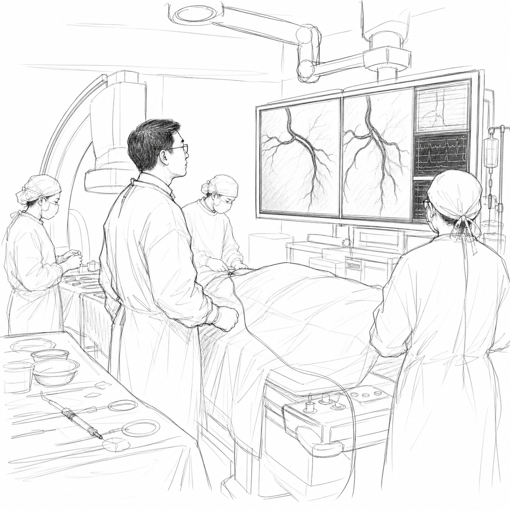
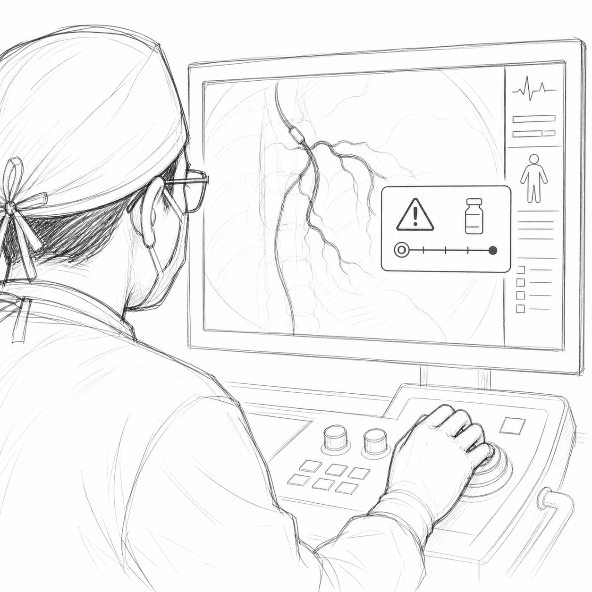
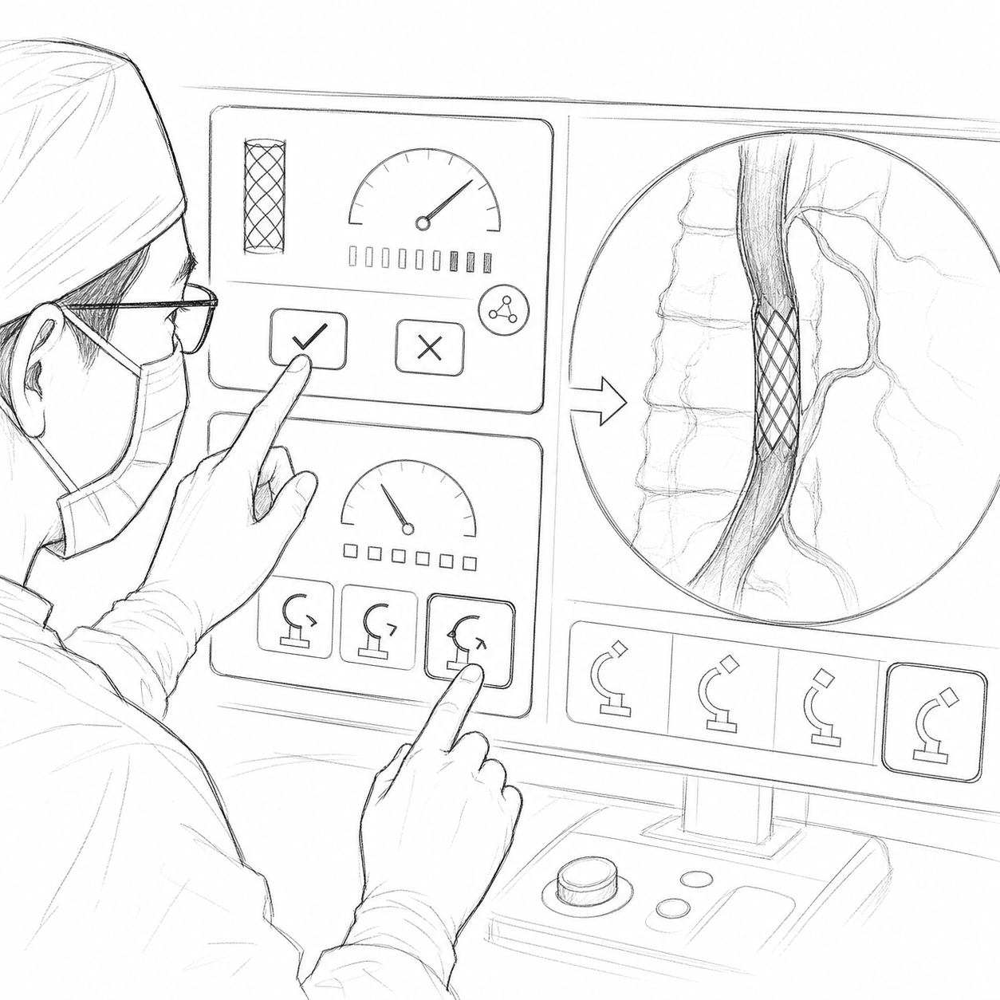
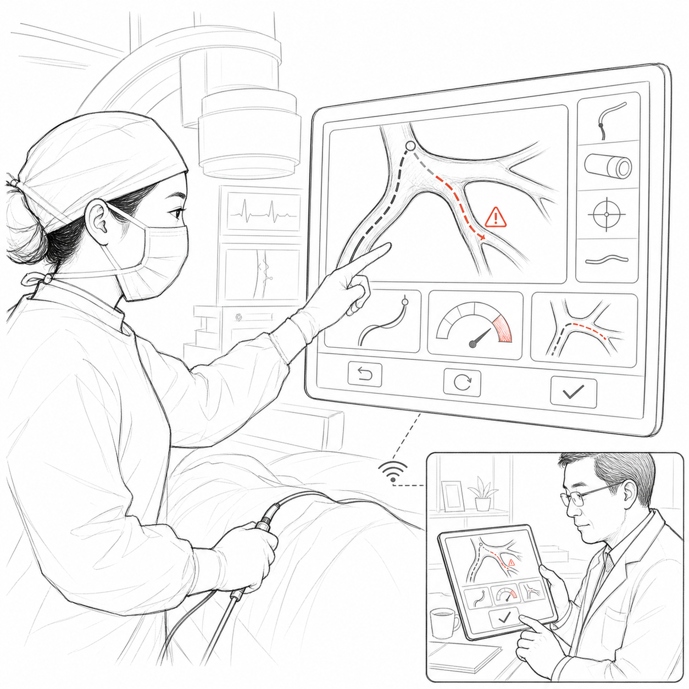
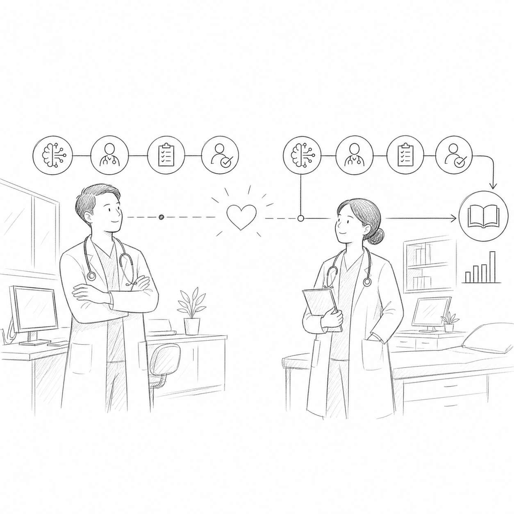

Panel 1A — Deep in the case
WS — 导管室建立镜头
陈医生正在处理复杂分叉病变。团队专注、节奏稳定；技术在场，却不是主角。
“在复杂介入中，最重要的细节，可能早在几个月前就被记录。”





最终画面
No one felt watched. Everyone felt backed up.纯白背景、黑色铅笔线；风险与模拟仅使用少量珊瑚红强调。保持临床冷静，不营造警报式焦虑。
所有 AI 输出都表现为“建议”，同时呈现置信度与依据；接受、覆写和导师签核必须具有相同的视觉尊重。
信息主动呈现、医生一键覆写、系统即时适应、替代路径模拟、远程监督、可追溯学习记录。
自主治疗暗示、监控摄像头、惩罚性告警、不可解释的 AI 决策，以及任何弱化医生最终责任的构图。